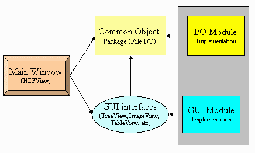
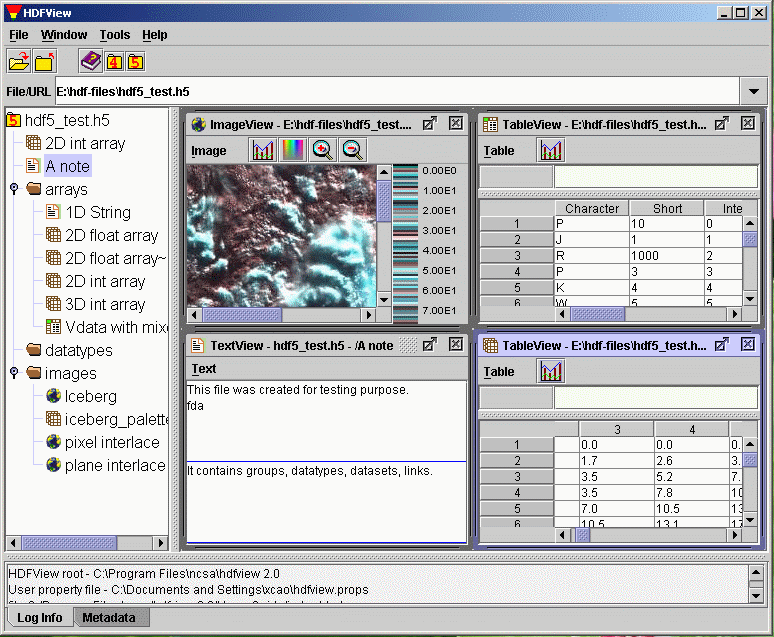
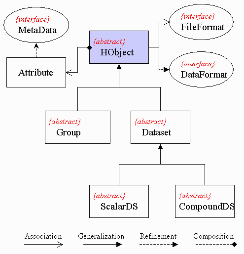
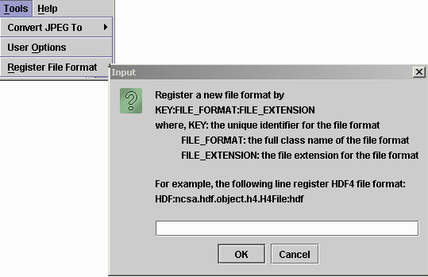
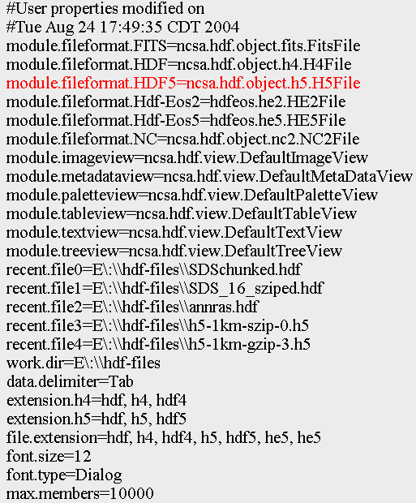
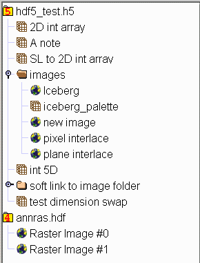
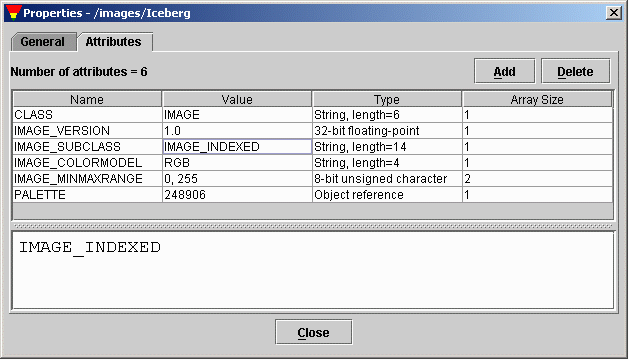
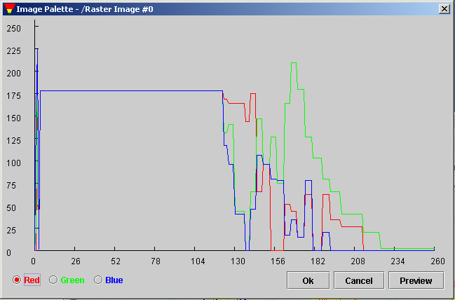
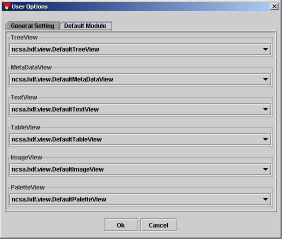

How to Implement HDFView Modules
Table of Contents
1.Introduction
This document describes the modular HDFView interfaces, and provides user
guidance on how to implement HDFView modules. This guide is not the HDFView
User's Guide. The HDFView Users Guide is installed with the HDFView or you
can visit the website at HDFView User's Guide.
1.1 What is modular HDFView?
Modular HDFView is an improved HDFView with replaceable I/O and GUI modules.
It consists of several interfaces that enable users to write and use alternative
implementations of I/O and GUI components to replace default modules. The current
replaceable modules include:
- File I/O (already implemented)
- Image view
- Table view (a spreadsheet-like layout)
- Text view
- Metadata (metadata and attributes) view
- Tree view
- Palette view
1.2 Why modular HDFView?
Early versions of HDFView (version 1.3 or earlier) are implemented with standard
GUI components such as tree view, table, and image view. These components cannot
be replaced. There is no optional tree view, table view, and etc for users to
display the data in different way. Supporting a new data format will also require
major changes in the GUI and I/O source code. To solve this problem, modular HDFView
is introduced. Modular HDFView will have the following advantages.
- Separation of file I/O and data viewer: GUI components do not depend on
file I/O implementation. Adding a new file format does not need to change
any of the GUI components.
- Replaceable GUI modules: users can implement their GUI components to
replace the default implementation of the TreeView, TableView, ImageView, etc
without change of any other code. The development of use modules and HDFView
are independent.
- Reuse source code: users can extend their classes from common packages
and abstract classes for less coding.
- Configurable installation: users can choose to install HDF4 support or
HDF5 support or both.
- Easy to maintain: replacing/changing one module does not change the rest
of the source code.
1.3 Basic requirements
The modular HDFView should meet the following basic requirements.
- Separate file I/O access and GUI components so that adding a new data
format does not require changing the GUI, and vice visa.
- Provide abstract interfaces/classes along with a default implementation.
- Dynamically load user's modules: automatically detect user's module,
which is packed in jar files
- Provide a mechanism for users to select which module to use when multiple
modules are provided.
- Extensive documentation and examples on how to implement such a module.
2. Fundamental approach
The fundamental approach is to re-architect the HDFView so that it separates API
definition and implementation. The HDFView only calls the abstract interfaces not the
implementation. This will allow users to write their own classes (or modules)
which implement the interfaces to replace standard default implementation. The
main goal is to make the modules easy to implement and flexible to meet user's needs.
The HDFView consists of three basic components: the main view, the object package,
and the GUI modules. The following figure explains the relationship of the
three components.

HDFView Components
The main window is the first window frame you see when you start the HDFView. It
has access to only to the the common object package (abstract data object classes)
and the GUI interfaces. It does not depend on any implemwntation of theI/O and
GUI components. Therefore, adding new modules does not require any change in the HDFView.
This will separate user's implementation from the HDFView development.
The layout of the main window is shown in the following figure. The main window has
two major panels: the TreeView Panel and the Data Panel. The TreeView Panel is used
to display the structure of the file in tree. The Data Panel is used to show onther
GUI components such as ImageView, TableView and TextView.

HDFView Main Window
The common object package, ncsa.hdf.object, consists of abstract classes
for file access. The abstract classes only define abstract methods such as data
input/output from/to file. Sub-classes have to implement these interfaces. The HDFView
only depends on the abstract classes. For example, when you open a file from the HDFView,
the main view calls the method, ncsa.hdf.object.FileFormat.open(filename) and
retrieves the file structure. The details of how to open the file and how to retrieve
the file structure are left for implementation classes.
GUI components, such as TreeView, ImageView, TableView, etc, are interfaces
instead of implementing classes. The main view only access to these interfaces.
For instance, when you launch a command from the HDFView to display a dataset in
TableView, the HDFView calls TreeView.showDataContent(dataObject) and returns
the implementation of the TableView of user's selection.
3. How to implement an I/O module
3.1 Classes to implement
The following diagram shows the class hierarchy of the object packag.
The class diagram uses the Unified Modeling Language (UML) notations:
association (has), generalization (inherits), refinement (implements) and
composition (belongs), to represent the relations of classes.
HObject is the base class of all data object, which implements DataFormat.
HObject has two inherited classes: Group and Dataset to represent HDF groups and
datasets. Dataset has two sub-classes, ScalarDS and CompoundDS. Each FileFormat
contains one or more HObjects.

I/O Class Hierarchy
To add new I/O module (file format), the following classes must be implemented.
- FileFormat
FileFormat defines general I/O accessing interface to file resources, such as
open/close file, and retrieve file structure. For details, read
FileFormat.html. Two
implementing classes,
H5File and
H4File, are provided for the HDFView
to support HDF5 and HDF4 respectively.
- Group
Group is an abstract class. This class includes general information of a group
object such as members of the group, and common operation on the group.
For details, read
Group.html. Two sub-classes,
H5Group and
H4Group, are provided to
represent HDF5 group and HDF4 group respectively.
- Dataset (ScarlarDS or CompoundDS or both)
This abstract class includes general information of a dataset object such as
datatype and dimensions, and common operation on the dataset such as read/write
data values. Dataset has two abstract subclasses:
ScalarDS and
CompoundDS. User's
classes must inherit from either ScalarDS or CompoundDS.
For details, read
Dataset.html.
3.2 Steps to implement an I/O module
To add an I/O module into HDFView, you must follow the steps below:
- Download and install HDFView and and include $HDFVIEW/lib/*.jar files in
your claspath
- Implement your I/O module (FileFormat, Group, and Dataset)
- Pack your binary classes in a jar file and put it at $HDFVIEW/lib/ext.
- If there is any required dynamic link libary, put it at your system path or
at $HDFVIEW/lib/ext for the HDFView to detect it.
- Register the new dataformat in HDFView or property file.
You only need to register the new dataformat once.
- Register the new FileFormat from HDFView: Start HDFView and go to
"Tools" --> "Add File Format" and add the full class name of the FileFormat
with a file extension and key associated to the file format.

Register FileFormat from HDFView
- Register the new FileFormat from property file: start HDFView and
close it if you never use the HDFView before. After the first use of
the HDFView, it creates a property file, hdfview.props, at the user director.
Add the new FileFormat in the property file in the form of
module.fileformat.KEY=full_class_path.
For example, the highlight
line registers the H5File in the HDFView property file,
C:\Documents and Settings\xcao\hdfview.props.

Register FileFormat from Property File
4. How to implement a GUI module
4.1 Replaceable GUI components
The modular HDFView provides several interfaces for GUI components along with default
implementation. Users can write their own implementation of these interfaces to replace
the default modules. A HDFView GUI component is TreeView, TableView or ImageView to
show file content visually. The main HDFView window is a frame to host these
components. The current replaceable GUI modules include Tree view, Table view,
Image view, Text view, Metadata view, Palette view
- Tree view
TreeView defines interfaces for displaying and operating file structure
in the form of tree. When you open file, HDFView will invoke the selected tree view
module and display the structure of the file on the tree view panel. User's module is
responsible on the details of how the file structure is displayed and what action
is take when a tree item is clicked. The default tree view displays the structure
of the file in a tree with data groups and data objects represented as conventional
folders and icons. Users can easily expand or collapse folders to navigate the
hierarchical structure of the file.

Default Tree View
- Table view
TableView is a spreadsheet-like table to display numberic or string data values.
The default table view provides very limited prreadsheet features.
- Image view
ImageView is used to display images. The default image view is provided to
display HDF4/5 images. it has very limited function of processing image. An HDF4
image is raster image of 8-bit pixels with and indexed RGB color table, or a
24-bit true color image. An HDF5 image is a dataset that confirms the HDF5 Image
Specification (with atribute name="CLASS" value="Image"). The default image view
supports two types of images: indexed and true color. Both indexed image and true
color image have predefined attributes and data layout according to the HDF5 image
specification.
- Text view
TextView is like a note pad. It displays the content of a dataset, usually
string-type datasets, in ASCII text. The default text view is a JInternalFrame with
a JTextArea.
- Metadata view
MetadataView shows metadata of objects. Metadata includes attributes, and
other properties of the object. The default metadata view is a JDialog with a tabbed panel
to show general information and attribue of a data object.

Default Metadata View
- Palette view
A palette or color table converts the logical colour numbers stored in
each pixel of an image dataset, normally represented as RGB triplets, that can be
displayed as image on the monitor. The palette view is for users to display and modify
the values of the RGB pixels.

Default Palette View
4.2 Steps to implement a GUI module
To add and use a GUImodule in HDFView, you must follow the steps below:
- Download and install HDFView and and include $HDFVIEW/lib/*.jar files in
your claspath
- Implement your GUI module (TreeView, TableView, ImageView, etc.)
- Pack your binary classes in a jar file and put it at $HDFVIEW/lib/ext.
- Restart the HDFView. The HDFView will automatically detects and load
the new GUI module.
- Set default GUI modlue. By default, HDFView opens dataset with default GUI
modules. You can change the default GUI modules by
"Tools" --> "User Options" --> "Default Module"

Set Default GUI Modules